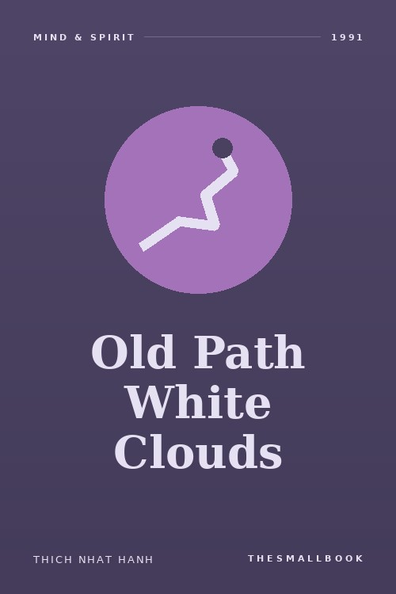

Library › Mind & Spirit
Old Path White Clouds - Summary & Key Lessons

The life of the Buddha, retold as a walking meditation by Thich Nhat Hanh.
📖 OPEN THE FULL INTERACTIVE BREAKDOWN →🌐 Read it in Hindi, Hinglish, Gujarati, Tamil & 22 more languages, with audio.
💡 The Big Idea
Drawing on Pali, Sanskrit and Chinese texts, Thich Nhat Hanh reconstructs the Buddha's life as a human story: a sheltered prince who sees sickness, age and death; a seeker who nearly starves himself; a teacher who spends forty five years walking northern India, founding a community that admitted outcastes and women, and answering farmers and kings with the same patience. The retelling strips away mythology's varnish until what remains is a man, a path, and the possibility of walking it.
🧠 The 8 Key Lessons
Lesson 1: The Four Sights Are Every Life's Curriculum
Siddhartha's Youth and Leaving
The young prince, raised behind palace walls built to hide suffering, encounters an old man, a sick man, a corpse and a wandering monk, and the fiction of a protected life collapses. Thich Nhat Hanh tells it without magic: the sights work because they are universal appointments each of us also has scheduled. The lesson is not to renounce palaces but to notice that every comfort is a wall of the same design, and that seeing clearly, however late, is the beginning of freedom rather than its price.
📖 Example: Modern readers meet their four sights in hospital corridors and parents' ageing faces, usually unprepared because their own walls, money, youth, busyness, were better built. Thich Nhat Hanh's telling normalises the shock: a prince with every advantage took twenty nine years and four encounters to see what was always outside the gate. Read the full example →
⚡ Do this: Name your palace wall honestly: the comfort that schedules your blindness. Spend one hour this week outside it, with the old, the sick or the dying, as a visitor who listens.
Lesson 2: The Middle Way Refuses Both Indulgence and Punishment
The Years of Practice
Before enlightenment, Siddhartha tortured his body for six years, eating so little that his spine showed like beads, and concluded that a starved mind cannot awaken. The middle way he then taught, between indulgence and self punishment, becomes Thich Nhat Hanh's refrain for everything: work, eating, activism, grief. The teaching is diagnostic for our era of extremes, where people oscillate between binge and purge in food, information and virtue, and call the oscillation a personality.
📖 Example: Thich Nhat Hanh applied the middle way in exile and war, eating mindfully in refugee camps and marching for peace without hatred for soldiers. His students describe the steadiness as the teaching's proof: a man who had refused both despair and comfort for fifty years, and remained gentle in public, on schedule. Read the full example →
⚡ Do this: Find your current oscillation, binge and purge in any substance, and design the middle portion for one week: enough, daily, without theatre.
Lesson 3: The Community Admitted Everyone, Deliberately
The Sangha's Founding
The Buddha's community broke the era's hardest lines: it ordained outcastes, a barber before princes so the princes would bow to him, and eventually, after advocacy, women, including the Buddha's own foster mother. Thich Nhat Hanh lingers on these ordinations because they carry the teaching's social signature: awakening is not a caste property. The sangha's internal democracy, its confession rituals and consensus decisions, also predate most republics, a fact the book lets speak without boasting.
📖 Example: The barber Upali's ordination is told in full: the proud Sakyan princes bowing to their former servant as their senior in the order. In one ceremony the Buddha reordered a hierarchy his whole civilisation considered natural, using seniority in practice as the only rank the community would recognise. Read the full example →
⚡ Do this: Audit one room you lead for its Upali test: who is quietly ranked by origin rather than practice? Change one seating, speaking or honouring order this month.
Lesson 4: Ananda and the Ethics of Listening
The Attendant Years
Ananda, the Buddha's cousin and attendant for twenty five years, is the book's quiet hero: the man who heard every sermon, memorised the canon into existence, and bargained for women's admission to the order when the founder hesitated. Thich Nhat Hanh uses him to teach listening as a spiritual technology: Ananda's enlightenment came last among the disciples precisely because his gift was holding others' words. In an age of broadcasters, the book honours the archivist, and suggests every community's survival depends on who does its remembering.
📖 Example: After the Buddha's death it is Ananda's memory the council summons, sermon by sermon, to fix the teaching before it scatters. Thich Nhat Hanh, whose own tradition survived wars by memorised transmission, writes those scenes with a copyist's reverence. Read the full example →
⚡ Do this: Be someone's Ananda this month: listen to one elder or teacher fully, and write down what they said before the week takes it.
Lesson 5: The Buddha's Management of Conflict
The Sangha's Difficult Years
The community the book follows quarrels, schisms and nearly splits, and Thich Nhat Hanh shows the Buddha mediating by listening tours, face saving compromises, and, once, simply leaving until the quarrellers exhaust themselves. The episodes read like organisational case studies: rules made only after incidents, never before; expulsion as the last instrument; reconciliation lunches as statecraft. Leaders of any community will find the Buddha's personnel files uncomfortably relevant.
📖 Example: When monks at Kosambi split into factions that would not share a roof, the Buddha withdrew to the forest and let an elephant and a monkey attend him, a story the tradition keeps half for comedy and half for doctrine. The monks, shamed by laypeople's questions, reconciled. Strategic absence, deployed once in forty years, is part of the curriculum. Read the full example →
⚡ Do this: In your current team conflict, try the listening tour first: every faction heard fully, in private, before you propose anything.
Lesson 6: Walking as the Delivery System of Wisdom
The Forty Five Years
The Buddha taught on foot, walking the Gangetic plain for nine months a year, which meant the teaching arrived at walking pace, in villages, adjusted to each listener's crop and grief. Thich Nhat Hanh, who built walking meditation into a global practice, reads the biography's geography as pedagogy: nothing in the path is in a hurry, and the community's insights were literally earned mile by mile. The book's own pacing is the argument; readers slow down or put it down, and either response teaches something.
📖 Example: Modern practitioners retracing the Buddha's routes in Bihar report the same discovery Thich Nhat Hanh built the book on: the distances enforce the doctrine. News, sermons and forgiveness all travelled at three miles an hour, and the civilisation that resulted had a different relationship with urgency than ours. Read the full example →
⚡ Do this: Take one decision this week at walking pace: walk the route while it ripens, phone pocketed, and let the miles vote.
Lesson 7: The Death at Kushinagar: Teaching to the Last Hour
The Final Days
The Buddha dies at eighty, of a bad meal eaten with grace to spare his host shame, teaching between waves of pain and giving the community its final constitution: be lamps unto yourselves, hold the teaching as your teacher now. Thich Nhat Hanh tells the death without terror or syrup, as the last sermon: impermanence demonstrated by the one person who could have been exempted by legend. The parinirvana chapters are read aloud at retreats worldwide because they rehearse, gently, the only appointment every reader keeps.
📖 Example: His last convert was a wandering ascetic who arrived as the teacher was dying and was ordained so no one could say they came too late. Thich Nhat Hanh lingers there: the door stayed open during the death itself, which is either biography or the whole doctrine in one gesture. Read the full example →
⚡ Do this: Write your own lamp sentence this week: the one instruction you would leave if your teaching ended tonight. Keep it where your people can find it.
Lesson 8: The Buddha as Organisation Builder
The Sangha Years
Thich Nhat Hanh gives unusual attention to the unglamorous decades: admitting members, settling disputes, setting rules case by case as real people generated real problems. The community's rules were not descended from abstraction; they were written from incidents, a sangha learning ethics the way common law learns from trials. Deepening means applying the model anywhere you build community: principles first, then case law, recorded honestly, so the institution gets wiser instead of merely older and louder about its founding purity.
📖 Example: His chapters show the Buddha mediating between monks and kings, families and renouncers, with ordination rules amended after each failure. Forty years of patch notes produced the vinaya. Readers running companies, schools or group chats will recognise the workload: culture is the sum of incidents handled visibly. Read the full example →
⚡ Do this: Write one rule for your household or team from a real recent incident, in the Buddha's case law style: what happened, what we now do. Keep the record.
✅ 5-Step Action Plan
- Spend one hour outside your palace wall this week, listening.
- Design the middle portion in one oscillating habit for seven days.
- Run the Upali test on one room you lead.
- Walk one regular route this week at the Buddha's pace, no headphones.
- Eat one meal in silence and attention, beginning to end.
- Tell one person the four sights story and ask for theirs.
- Read two chapters nightly; the book is built for walking pace.
⚠️ When This Doesn't Work
It is a devotional retelling by a modern master, harmonising sources scholars keep separate; readers wanting critical history should pair it with academic biography. Its length is considerable and meant to be.
💀 The Graveyard Proves It
💬 Best Quotes from Old Path White Clouds
- “Breathing in, I calm my body. Breathing out, I smile.”
- “The present moment is the only moment available to us, and it is the door to all moments.”
- “Understanding is the foundation of love.”
Interactive version: mark lessons as read, listen in your language, share quote cards.